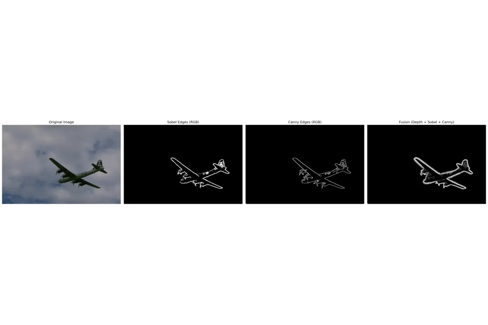
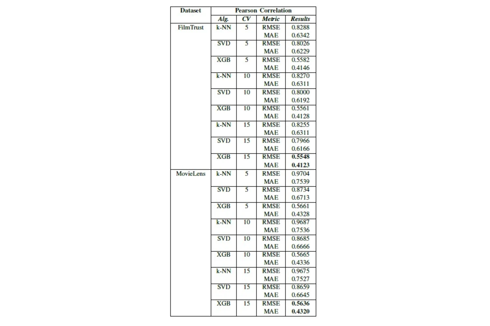
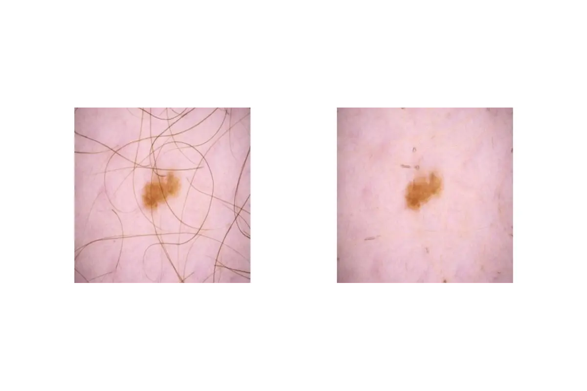
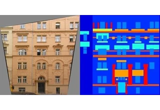

Hello, I'm Muhammet Computer Engineer AI & Computer Vision Researcher
About
I'am Muhammet
I am Muhammet Paşaoğlu, a researcher in Computer Engineering specializing in computer vision, deep learning, and artificial intelligence. My academic journey bridges theory and application, with a strong focus on stylization, face recognition, and generative AI.
Skills
Research & Technical Skills
I work across computer vision, artificial intelligence, and deep learning. My core strengths include building and evaluating recognition systems, developing generative models, and applying game theory to machine learning.
Python
95%
Deep Learning (PyTorch, TensorFlow)
90%
Computer Vision & Image Processing
94%
Edge Detection & Image Segmentation
85%
Depth Estimation (MiDaS, DPT Models)
80%
Generative Models (GANs, Diffusion)
85%
Data Analysis & Research Writing
90%
Publications
Investigating the Effectiveness of Stylization on the Performance of Deep Face Recognition Systems
M. Paşaoğlu, E. Arıcan
Under Review • Gazi University Journal of Science, 2025
Stylization, robustness, face recognition, partial stylization.
A Hybrid Conditional GAN Design for Image-to-Image Translation Integrating UNet and ResNet
K. Alhariri, M. Paşaoğlu, E. Arıcan
AcceptedIn Publications Phase • Firat University Journal of Experimental and Computational Engineering, 2025
Optimizing Recommendation Systems By Fusion of KNN, Singular Value Decomposition, and XGBoost for Enhanced Performance
M. Paşaoğlu, E. Arıcan
Conference • 2024 9th International Conference on Computer Science and Engineering (UBMK)
Introduced Automatic Partial Stylization (APS)—selectively stylizes regions to test robustness, showing even partial stylization can fool SOTA face networks.

Semi-Supervised Edge Optimizer
Fusing RGB & depth cues to to generate a Semi-Supervised edge detection modular.

Optimizing Recommendation Systems
Fusion of KNN, SVD, and XGBoost for enhanced recommendation performance.

Hairless Image Preprocessing for Accurate Skin Lesion Detection and Segmentation
Preprocessing pipeline removing hair artifacts in dermoscopy to boost lesion segmentation & classification accuracy.

Hybrid Conditional GAN
Combining U-Net and ResNet for robust image-to-image translation.